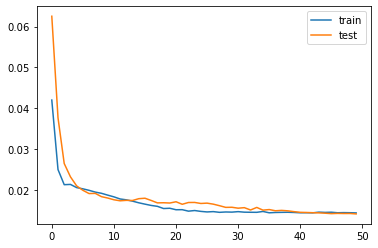

from math import sqrt
from numpy import concatenate
from matplotlib import pyplot
from pandas import read_csv
from pandas import DataFrame
from pandas import concat
from sklearn.preprocessing import MinMaxScaler
from sklearn.preprocessing import LabelEncoder
from sklearn.metrics import mean_squared_error
from tensorflow.keras.models import Sequential
from tensorflow.keras.layers import Dense
from tensorflow.keras.layers import LSTMBeijing Pollution
Third script uses 3 previous lags
# convert series to supervised learning
def series_to_supervised(data, n_in=1, n_out=1, dropnan=True):
n_vars = 1 if type(data) is list else data.shape[1]
df = DataFrame(data)
cols, names = list(), list()
# input sequence (t-n, ... t-1)
for i in range(n_in, 0, -1):
cols.append(df.shift(i))
names += [('var%d(t-%d)' % (j+1, i)) for j in range(n_vars)]
# forecast sequence (t, t+1, ... t+n)
for i in range(0, n_out):
cols.append(df.shift(-i))
if i == 0:
names += [('var%d(t)' % (j+1)) for j in range(n_vars)]
else:
names += [('var%d(t+%d)' % (j+1, i)) for j in range(n_vars)]
# put it all together
agg = concat(cols, axis=1)
agg.columns = names
# drop rows with NaN values
if dropnan:
agg.dropna(inplace=True)
return agg
# load dataset
dataset = read_csv('./data/pollution.csv', header=0, index_col=0)
values = dataset.values
# integer encode direction
encoder = LabelEncoder()
values[:,4] = encoder.fit_transform(values[:,4])
# ensure all data is float
values = values.astype('float32')# normalize features
scaler = MinMaxScaler(feature_range=(0, 1))
scaled = scaler.fit_transform(values)
scaled[0:10,:]array([[0.12977867, 0.35294122, 0.24590163, 0.5272732 , 0.6666667 ,
0.00229001, 0. , 0. ],
[0.14889336, 0.36764708, 0.24590163, 0.5272732 , 0.6666667 ,
0.00381099, 0. , 0. ],
[0.15995975, 0.4264706 , 0.22950819, 0.545454 , 0.6666667 ,
0.00533197, 0. , 0. ],
[0.18209255, 0.48529413, 0.22950819, 0.5636368 , 0.6666667 ,
0.00839101, 0.03703704, 0. ],
[0.13883299, 0.48529413, 0.22950819, 0.5636368 , 0.6666667 ,
0.00991199, 0.07407407, 0. ],
[0.10965794, 0.48529413, 0.21311474, 0.5636368 , 0.6666667 ,
0.01143297, 0.11111111, 0. ],
[0.1056338 , 0.48529413, 0.21311474, 0.5818176 , 0.6666667 ,
0.01449201, 0.14814815, 0. ],
[0.12474848, 0.48529413, 0.22950819, 0.6000004 , 0.6666667 ,
0.01755106, 0. , 0. ],
[0.12072434, 0.47058827, 0.21311474, 0.6000004 , 0.6666667 ,
0.0206101 , 0. , 0. ],
[0.13279678, 0.48529413, 0.22950819, 0.61818314, 0.6666667 ,
0.02366915, 0. , 0. ]], dtype=float32)# specify the number of lag hours
n_hours = 1
n_features = 8
# frame as supervised learning
reframed = series_to_supervised(scaled, n_hours, 1)
print(reframed.shape)(43799, 16)reframed| var1(t-1) | var2(t-1) | var3(t-1) | var4(t-1) | var5(t-1) | var6(t-1) | var7(t-1) | var8(t-1) | var1(t) | var2(t) | var3(t) | var4(t) | var5(t) | var6(t) | var7(t) | var8(t) | |
|---|---|---|---|---|---|---|---|---|---|---|---|---|---|---|---|---|
| 1 | 0.129779 | 0.352941 | 0.245902 | 0.527273 | 0.666667 | 0.002290 | 0.000000 | 0.0 | 0.148893 | 0.367647 | 0.245902 | 0.527273 | 0.666667 | 0.003811 | 0.000000 | 0.0 |
| 2 | 0.148893 | 0.367647 | 0.245902 | 0.527273 | 0.666667 | 0.003811 | 0.000000 | 0.0 | 0.159960 | 0.426471 | 0.229508 | 0.545454 | 0.666667 | 0.005332 | 0.000000 | 0.0 |
| 3 | 0.159960 | 0.426471 | 0.229508 | 0.545454 | 0.666667 | 0.005332 | 0.000000 | 0.0 | 0.182093 | 0.485294 | 0.229508 | 0.563637 | 0.666667 | 0.008391 | 0.037037 | 0.0 |
| 4 | 0.182093 | 0.485294 | 0.229508 | 0.563637 | 0.666667 | 0.008391 | 0.037037 | 0.0 | 0.138833 | 0.485294 | 0.229508 | 0.563637 | 0.666667 | 0.009912 | 0.074074 | 0.0 |
| 5 | 0.138833 | 0.485294 | 0.229508 | 0.563637 | 0.666667 | 0.009912 | 0.074074 | 0.0 | 0.109658 | 0.485294 | 0.213115 | 0.563637 | 0.666667 | 0.011433 | 0.111111 | 0.0 |
| ... | ... | ... | ... | ... | ... | ... | ... | ... | ... | ... | ... | ... | ... | ... | ... | ... |
| 43795 | 0.010060 | 0.264706 | 0.278689 | 0.763638 | 0.333333 | 0.385730 | 0.000000 | 0.0 | 0.008048 | 0.250000 | 0.278689 | 0.781818 | 0.333333 | 0.395659 | 0.000000 | 0.0 |
| 43796 | 0.008048 | 0.250000 | 0.278689 | 0.781818 | 0.333333 | 0.395659 | 0.000000 | 0.0 | 0.010060 | 0.264706 | 0.262295 | 0.781818 | 0.333333 | 0.405588 | 0.000000 | 0.0 |
| 43797 | 0.010060 | 0.264706 | 0.262295 | 0.781818 | 0.333333 | 0.405588 | 0.000000 | 0.0 | 0.010060 | 0.264706 | 0.262295 | 0.781818 | 0.333333 | 0.413996 | 0.000000 | 0.0 |
| 43798 | 0.010060 | 0.264706 | 0.262295 | 0.781818 | 0.333333 | 0.413996 | 0.000000 | 0.0 | 0.008048 | 0.264706 | 0.245902 | 0.781818 | 0.333333 | 0.420866 | 0.000000 | 0.0 |
| 43799 | 0.008048 | 0.264706 | 0.245902 | 0.781818 | 0.333333 | 0.420866 | 0.000000 | 0.0 | 0.012072 | 0.279412 | 0.262295 | 0.781818 | 0.333333 | 0.426216 | 0.000000 | 0.0 |
43799 rows × 16 columns
reframed.head()
reframed.to_csv("test.csv")# split into train and test sets
values = reframed.values
n_train_hours = 365 * 24
train = values[:n_train_hours, :]
test = values[n_train_hours:, :]
# split into input and outputs
n_obs = n_hours * n_features
train_X, train_y = train[:, :n_obs], train[:, -n_features]
test_X, test_y = test[:, :n_obs], test[:, -n_features]
print(train_X.shape, len(train_X), train_y.shape)
# reshape input to be 3D [samples, timesteps, features]
train_X = train_X.reshape((train_X.shape[0], n_hours, n_features))
test_X = test_X.reshape((test_X.shape[0], n_hours, n_features))
print(train_X.shape, train_y.shape, test_X.shape, test_y.shape)(8760, 8) 8760 (8760,)
(8760, 1, 8) (8760,) (35039, 1, 8) (35039,)train_X.shape(8760, 1, 8)values[1,]array([0.14889336, 0.36764708, 0.24590163, 0.5272732 , 0.6666667 ,
0.00381099, 0. , 0. , 0.15995975, 0.4264706 ,
0.22950819, 0.545454 , 0.6666667 , 0.00533197, 0. ,
0. , 0.18209255, 0.48529413, 0.22950819, 0.5636368 ,
0.6666667 , 0.00839101, 0.03703704, 0. , 0.13883299,
0.48529413, 0.22950819, 0.5636368 , 0.6666667 , 0.00991199,
0.07407407, 0. ], dtype=float32)train_X[0,:,]
#train_X.shapearray([[0.12977867, 0.35294122, 0.24590163, 0.5272732 , 0.6666667 ,
0.00229001, 0. , 0. ],
[0.14889336, 0.36764708, 0.24590163, 0.5272732 , 0.6666667 ,
0.00381099, 0. , 0. ],
[0.15995975, 0.4264706 , 0.22950819, 0.545454 , 0.6666667 ,
0.00533197, 0. , 0. ]], dtype=float32)train_y[0]0.18209255# design network
model = Sequential()
model.add(LSTM(50, input_shape=(train_X.shape[1], train_X.shape[2])))
model.add(Dense(1))
model.compile(loss='mae', optimizer='adam')# fit network
history = model.fit(train_X, train_y, epochs=50, batch_size=72, validation_data=(test_X, test_y), verbose=2, shuffle=False)
# plot history
pyplot.plot(history.history['loss'], label='train')
pyplot.plot(history.history['val_loss'], label='test')
pyplot.legend()
pyplot.show()Train on 8760 samples, validate on 35037 samples
Epoch 1/50
8760/8760 - 7s - loss: 0.0420 - val_loss: 0.0625
Epoch 2/50
8760/8760 - 4s - loss: 0.0249 - val_loss: 0.0376
Epoch 3/50
8760/8760 - 4s - loss: 0.0212 - val_loss: 0.0264
Epoch 4/50
8760/8760 - 4s - loss: 0.0213 - val_loss: 0.0232
Epoch 5/50
8760/8760 - 4s - loss: 0.0205 - val_loss: 0.0209
Epoch 6/50
8760/8760 - 4s - loss: 0.0202 - val_loss: 0.0199
Epoch 7/50
8760/8760 - 4s - loss: 0.0199 - val_loss: 0.0191
Epoch 8/50
8760/8760 - 4s - loss: 0.0194 - val_loss: 0.0191
Epoch 9/50
8760/8760 - 4s - loss: 0.0191 - val_loss: 0.0183
Epoch 10/50
8760/8760 - 4s - loss: 0.0187 - val_loss: 0.0180
Epoch 11/50
8760/8760 - 4s - loss: 0.0183 - val_loss: 0.0175
Epoch 12/50
8760/8760 - 4s - loss: 0.0177 - val_loss: 0.0173
Epoch 13/50
8760/8760 - 4s - loss: 0.0175 - val_loss: 0.0174
Epoch 14/50
8760/8760 - 4s - loss: 0.0172 - val_loss: 0.0174
Epoch 15/50
8760/8760 - 4s - loss: 0.0168 - val_loss: 0.0178
Epoch 16/50
8760/8760 - 4s - loss: 0.0165 - val_loss: 0.0179
Epoch 17/50
8760/8760 - 4s - loss: 0.0162 - val_loss: 0.0174
Epoch 18/50
8760/8760 - 4s - loss: 0.0159 - val_loss: 0.0168
Epoch 19/50
8760/8760 - 4s - loss: 0.0154 - val_loss: 0.0168
Epoch 20/50
8760/8760 - 4s - loss: 0.0155 - val_loss: 0.0167
Epoch 21/50
8760/8760 - 4s - loss: 0.0151 - val_loss: 0.0171
Epoch 22/50
8760/8760 - 4s - loss: 0.0151 - val_loss: 0.0164
Epoch 23/50
8760/8760 - 4s - loss: 0.0147 - val_loss: 0.0169
Epoch 24/50
8760/8760 - 4s - loss: 0.0149 - val_loss: 0.0169
Epoch 25/50
8760/8760 - 4s - loss: 0.0147 - val_loss: 0.0166
Epoch 26/50
8760/8760 - 4s - loss: 0.0146 - val_loss: 0.0167
Epoch 27/50
8760/8760 - 4s - loss: 0.0146 - val_loss: 0.0165
Epoch 28/50
8760/8760 - 4s - loss: 0.0145 - val_loss: 0.0161
Epoch 29/50
8760/8760 - 5s - loss: 0.0145 - val_loss: 0.0157
Epoch 30/50
8760/8760 - 4s - loss: 0.0145 - val_loss: 0.0157
Epoch 31/50
8760/8760 - 4s - loss: 0.0146 - val_loss: 0.0155
Epoch 32/50
8760/8760 - 4s - loss: 0.0145 - val_loss: 0.0156
Epoch 33/50
8760/8760 - 4s - loss: 0.0145 - val_loss: 0.0150
Epoch 34/50
8760/8760 - 4s - loss: 0.0145 - val_loss: 0.0157
Epoch 35/50
8760/8760 - 4s - loss: 0.0147 - val_loss: 0.0150
Epoch 36/50
8760/8760 - 4s - loss: 0.0143 - val_loss: 0.0151
Epoch 37/50
8760/8760 - 4s - loss: 0.0144 - val_loss: 0.0148
Epoch 38/50
8760/8760 - 4s - loss: 0.0145 - val_loss: 0.0149
Epoch 39/50
8760/8760 - 4s - loss: 0.0145 - val_loss: 0.0148
Epoch 40/50
8760/8760 - 4s - loss: 0.0144 - val_loss: 0.0146
Epoch 41/50
8760/8760 - 4s - loss: 0.0144 - val_loss: 0.0145
Epoch 42/50
8760/8760 - 4s - loss: 0.0144 - val_loss: 0.0144
Epoch 43/50
8760/8760 - 4s - loss: 0.0143 - val_loss: 0.0144
Epoch 44/50
8760/8760 - 4s - loss: 0.0145 - val_loss: 0.0143
Epoch 45/50
8760/8760 - 4s - loss: 0.0144 - val_loss: 0.0142
Epoch 46/50
8760/8760 - 4s - loss: 0.0145 - val_loss: 0.0141
Epoch 47/50
8760/8760 - 4s - loss: 0.0144 - val_loss: 0.0142
Epoch 48/50
8760/8760 - 4s - loss: 0.0144 - val_loss: 0.0142
Epoch 49/50
8760/8760 - 4s - loss: 0.0144 - val_loss: 0.0142
Epoch 50/50
8760/8760 - 4s - loss: 0.0143 - val_loss: 0.0141
# make a prediction
yhat = model.predict(test_X)
test_X = test_X.reshape((test_X.shape[0], n_hours*n_features))
# invert scaling for forecast
inv_yhat = concatenate((yhat, test_X[:, -7:]), axis=1)
inv_yhat = scaler.inverse_transform(inv_yhat)
inv_yhat = inv_yhat[:,0]
# invert scaling for actual
test_y = test_y.reshape((len(test_y), 1))
inv_y = concatenate((test_y, test_X[:, -7:]), axis=1)
inv_y = scaler.inverse_transform(inv_y)
inv_y = inv_y[:,0]
# calculate RMSE
rmse = sqrt(mean_squared_error(inv_y, inv_yhat))
print('Test RMSE: %.3f' % rmse)Test RMSE: 26.581